OnePlace / Out-of-the-Box Basics
OnePlace is the default landing page for all Users when they log into an application. It is where they navigate and complete Workflow tasks, and interact with the application, as well as other Users within the application. As the chapter title suggests, OnePlace truly is out-of-the-box and serves as the default home page. I like to think the clue is in the name; Users don’t have to go looking very far or ask their Administrators for anything they need because “Everything is in One Place.”
There are four sub-menus within OnePlace:
Workflow
Cube Views
Dashboards
Documents
Configuring your application appropriately is dependent on knowing your User community and understanding their needs; this concept applies to every aspect of OneStream as Users drive what and how you configure various Components within the application.
In broader terms, I like to categorize the OnePlace sub-menus into two buckets:
Workflow
One-stop shop
I say this because Workflow is the collection point of everything necessary for a User to ‘do’, while the one-stop shop provides a repository of Reports, Dashboards, and documents that Users can access on-demand based on their User security profile.
This is not to say the User does not need the other sub-menus, but rather that a well-designed Workflow should include the relevant Components within each Workflow task to guide the User without needing to navigate away from the Workflow process.
So, back to bucket number two – the one-stop shop.
You have implemented OneStream and wonder how you should configure your Users’ OnePlace experience. Think of everything non-Workflow related as à la carte options. Organizing Cube View Profiles and Dashboard Profiles is the key to ease of maintenance and User adoption. Why? Because once you have established role-based security, the User roles you have defined are used to assign access and maintenance rights by User type rather than individual Users, allowing for ease of administration. In other words, you can simply change the security access settings on any given Cube View, Dashboard, or Document Component to grant or revoke access to the appropriate Users within a User role group.
This chapter will explain the purpose of each sub-menu, how they work together, and some tips on how to configure them to provide a tailored User Experience, which will ultimately increase confidence and efficiency.
OnePlace / Out-of-the-Box Basics
Workflow
Each of the reporting tools described in Chapter 3 are used to enhance the User Experience in Workflow progression. Let us take a deeper dive into the default Workflow steps and find out how each step can enhance the User Experience.
OnePlace / Out-of-the-Box Basics › Workflow
Import
Importing data into OneStream is an extremely powerful piece of any Workflow; this is where the magic happens! The most common use of the import step is to bring data into the Stage tables and transform the data into meaningful dimensional intersections. I like to think of sorting dirty laundry at this point; arranging the data fields using data source mapping is like making sure that fancy black dress does not shrink, and those white socks do not turn pink.
So, what exactly does this mean in terms of enhancing the User Experience? In addition to data validation, supplemental Dashboards for training can be assigned to each Workflow step to provide in-role refreshers as you go through your Workflow steps.
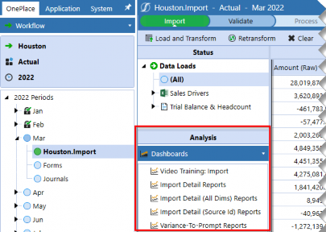
Figure 4.1
When designing the Workflow, it’s important to know where the source and target data reside to leverage data collection upfront for additional uses that may or may not be anticipated. Make it a habit to capture unmapped data fields, and you’ll set yourself up for success. To do this, you’ll need to enable the attributes by Scenario Type from the Cube Integration settings.
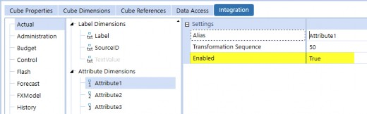
Figure 4.2
In the Dashboards section of this chapter, we will address how Stage tables can enhance the User Experience by querying the source data and effectively eliminating the need to navigate to external sources or files.
OnePlace / Out-of-the-Box Basics › Workflow
Forms
Data entry Forms are used to collect supplemental data, whether financial, statistical, or more granular data tie-out, commonly used to accelerate footnote generation.
In Figure 4.3, we are tracking headcount by cost center. Our prior period headcount import file tells us we had a headcount of 159; however, in the current period, we now have 162. How do we resolve the difference? We do not necessarily need to resolve but explain. We explain the difference using a Cube View with a calculated column to identify where cost center variances exist, so we can quickly adjust for headcount fluctuations. Notice the Parameters drop-down selector at the top of the Form. This indicates that the underlying Cube View’s POV has been parameterized, which allows the same Cube View template to be used for any Entity or other specified Dimension.
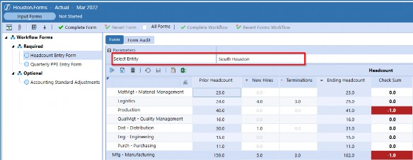
Figure 4.3
Another common use of data entry Forms is to collect roll-forward detail. Like the Headcount Form, Figure 4.4 shows another Form that is also parameterized to reduce the maintenance of Cube Views and then utilize the same settings between Entities.
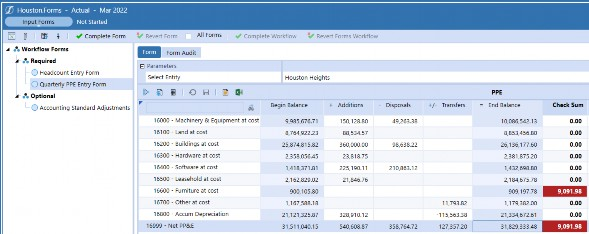
Figure 4.4
Now, to take this one step further, the Cube View in Figure 4.4 has been formatted for the Data Explorer Grid and PDF output. What does that mean for you? It means you can display the Form in PDF format to see how the footnote would appear in your financial reporting package.
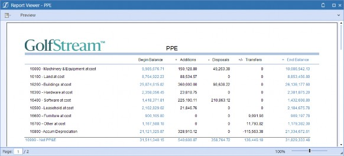
Figure 4.5
OnePlace / Out-of-the-Box Basics › Workflow
Adjustments
Adjustments are used in the Financial Close process but can also be used in Budget formulation and really any functional process, as this is dependent on Users’ requirements. I love adjustments – correcting, adjusting, allocating, you name it – the accountant in me is a huge fan of cleaning up and organizing data. Unfortunately, most people do not find adjustments as exciting as I do, that is until they see just how much efficiency they gain when creating Journal templates.
Journal templates allow you to create standards based on the type of adjustment, frequency, and if/how much you want to allow your Users to modify any given entry. Do you have required monthly tax accruals? Quarterly PPE entries? What about discretionary or dependent adjustments? Figure 4.6 shows an example of required versus optional Journals for month-end. The optional Journal templates are available to the User for adjustments as necessary, while the required Journal template indicates that an entry must be made to complete the Workflow.
Journal templates are by no means required to enter adjustments; Users could enter Journals from scratch if the available templates do not align with the necessary adjustment.
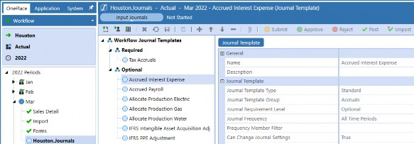
Figure 4.6
OnePlace / Out-of-the-Box Basics › Workflow
Review
Base Input Workflows are the Parent of Workflow tasks and are configured according to the level of review and approvals in the Workflow structure. Hence, this is the review phase of a standard Workflow.
Out-of-the-box Workflows for review include the following options, with varying combinations available for selection.
Process
Confirm
Certify
Workspace
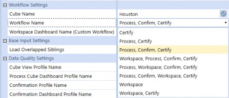
Figure 4.7
Process, Confirm, Workspace, Certify is my personal favorite Workflow because it makes the most sense in terms of data validation and the flow of certification.
Process can be a variety of methods for updating your data as needed. It may be a simple Calculation on a single Entity, or a Consolidation if multiple Entities have been loaded and need to roll-up data to common Parents.
Confirmation consists of rules defined by the User’s process to evaluate activity, balances, annotation requirements, and any other validations that accelerate the process by marking Entities as passing or failing. The confirmation step tells the User what passes the validation and is designed to guide the User into taking corrective action.
Workspaces are incredibly flexible since they are any Dashboard that can be layered on a Workflow to provide more granular review and drill back capabilities.
Certify is always used at any review level; however, there is an option for just ‘Workspace only.’
Why wouldn’t all Workflows use all the review steps? The short answer is that not all steps are always applicable. Imagine three Entity-specific Workflows with import, Forms, and adjustments. In theory, each Entity would certify their Workflow and even validate data using Confirmation Rules. But now, imagine that individual Entities cannot independently validate data and – rather – the Confirmation Rules apply to the consolidated numbers. Confirmation Rules may not be relevant to the individual Entities and the option for ‘Process, Certify, only’ stands.
OnePlace / Out-of-the-Box Basics
Cube Views
OnePlace / Out-of-the-Box Basics › Cube Views
OnePlace
Cube Views are the drivers behind all functions in OneStream. They are used for Forms, Reports, Tables, and Dashboards. Due to the nature of expansive usage, Cube View profiles are available in various areas throughout the platform, making it easy to configure the application to display and securitize data effectively. Think of a Cube View profile as a cluster of Cube Views, which can comprise one or more groups.
Cube View profiles can be made visible in any of the following application areas:
Forms
Excel
Dashboards
Workflow
OnePlace
Figure 4.8 shows a specific User with only two profiles visible in the OnePlace pane, based on security. Profiles and visibility are tailored to meet User needs and simplify the task at hand. You may be thinking, why not give them more profiles for the purpose of analysis? But bigger is not always better; in fact, by broadening the profiles that you make visible to a User, you could be creating confusion in the form of data overload.
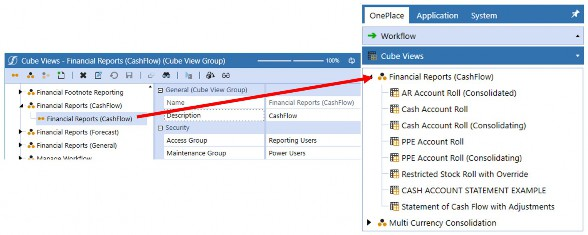
Figure 4.8
OnePlace / Out-of-the-Box Basics › Cube Views
Cube View Groups
Cube View groups are where Cube Views are created and organized in OneStream; a Cube View group must be created before a Cube View can be created. Depending on the design of your application, you could have just a handful of groups or (more likely) you’ll have a lot of groups to organize Cube Views (relative to when and where they need to be displayed or used).
OnePlace / Out-of-the-Box Basics › Cube Views
Cube View Profiles
Cube View profiles allow Cube View groups to be combined or grouped within various areas of the application. Profile assignment is critical in designing a guided Workflow to provide ease of use and give the User insight into the data at each step.
Below, we see a Cube View profile with one Cube View group; notice that the profile and group have different security Access Groups assigned. Why would they be different? Think about this in terms of reduced maintenance; you may have different groupings of Cube Views for organizational purposes, but you might want to filter what Users see while not needing two profiles.
In this case, the profile is visible to Everyone, but the User would need to be in the Reporting Users Security Group to see the Cube View. To add a little complexity, let’s say you added another Cube View group to the profile, and you want all Users to have access to it. By leveraging the existing profile, you can reduce profiles to be managed simply by narrowing security rights by each group.
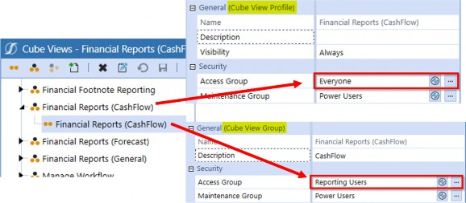
Figure 4.9
OnePlace / Out-of-the-Box Basics › Cube Views › Cube View Profiles
Vary Cube View Profiles by Workflow
OneStream’s out-of-the-box Workflow functionality allows the User Experience to align with the goals they are trying to achieve at each step in the process. As the User progresses through the Workflow, we are able to display relevant data and Reports to guide the User to key data and validation.
In this example, we are showing that Cube Views for the import step are limited to trial balance data. Why? Because, at this point, the User’s goal is to validate that the imported trial balance data is balanced and review any anomalies that may need to be adjusted in the subsequent steps of the Workflow.
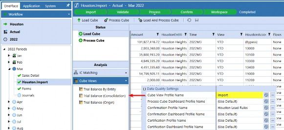
Figure 4.10
Once we’ve processed the information, we probably want to use Confirmation Rules to check that our data is right and has passed our validation checks. At that exact point in the Workflow, we can have a different group of Cube Views or Dashboards appear, most likely showing the data that we are validating and why it is passing (or failing) the checks.
Upon completion of the required Workflow tasks, the User needs to certify the data before submitting it for approval. “But how do I know my data is accurately stated? What do my financial statements look like after I have loaded data and made adjustments?” I often found myself asking these exact questions when preparing financial statements in my prior career. Well, in OneStream we can embed additional Reports and Dashboards again at the Certify step, if needed. This allows Users to be confident in signing off the numbers they are responsible for.
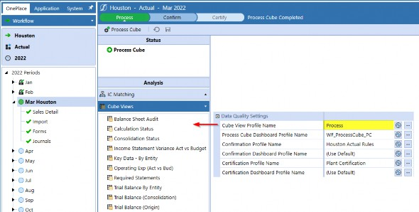
Figure 4.11
OnePlace / Out-of-the-Box Basics
Dashboards
OnePlace / Out-of-the-Box Basics › Dashboards
Dashboard Purpose
Dashboards are wildly popular since they can be fully configured both functionally and aesthetically. The sheer possibilities of dashboarding can be overwhelming – even to seasoned Consultants – so I like to think of them in these broad categories:
Functional
Call-to-action
Informational
OnePlace / Out-of-the-Box Basics › Dashboards › Dashboard Purpose
Functional Dashboards
Functional Dashboards collect data in some manner, whether from data entry Forms, Calculations, commentary, or file attachments. These Dashboards belong in a Workflow and not in OnePlace since they are Time- and Scenario-specific to a Workflow process. By restricting these Dashboards to Workflow-only visibility, the audit tables can inherently capture and streamline data activity.
Say you need a data entry Form in your Workflow process, but you want to give your Users something more visually appealing than the default Forms, or you simply want to add branding, instructions, you name it. How could I make Forms prettier, you ask? Use a Workspace!
Personally, I find it more enjoyable to do my work when I like what I am looking at, and even more when I can easily access training materials and supplemental data to help me be more efficient.
Keeping that in mind, I try to make Dashboards easy on the eyes so that Users are more likely to adopt and want to use them. Workspaces require configuration; however, the payoff to make the User Experience more interactive and personalized is worth it.
| Tip: When designing Cube Views that contain data entry cells, use the Cell Format WriteableBackgroundColor property to highlight which data cells the User can enter/update. This helps guide the User to the areas they are responsible for. |
Figure 4.12 displays writable data cells with a yellow background. Notice that FICA % and FICA Limit are not writable in this example. The assumption in this example is that the FICA drivers have been entered by an Administrator or Power User and are displayed here for reference only.
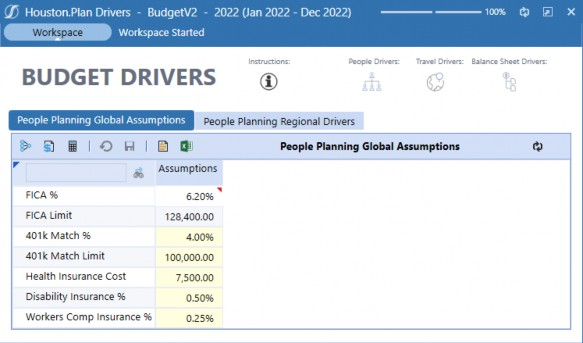
Figure 4.12
OnePlace / Out-of-the-Box Basics › Dashboards › Dashboard Purpose
Call-to-Action Dashboards
Call-to-Action Dashboards are not functional in the sense that they impact Workflow directly; instead, they provide information tailored to the Users’ responsibilities. They can, however, be functional (in a sense) if navigation buttons are added to take the User directly to an outstanding task or item to review.
Common uses for Call-to-Action Dashboards include:
Workflow Status
User Activity
Application Audit
In the example below, an individual User can view Workflow-specific tasks they are responsible for, and quickly determine what is outstanding.
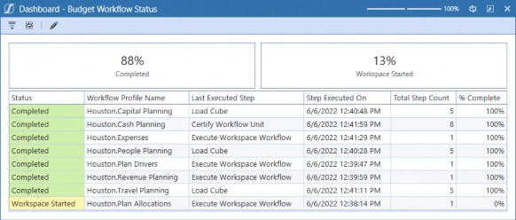
Figure 4.13
The following example shows all Workflows and their respective tasks with completion status. An Administrator or Power User would typically review this to identify Workflow tasks that are incomplete easily. Whether the Workflow is tracking Budget formulation, monthly financial close, or any other formal process, reviewing the full Workflow structure status makes it easy to keep Users on track to meet deadlines and eliminate bottlenecks.
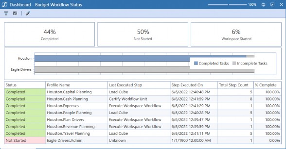
Figure 4.14
OnePlace / Out-of-the-Box Basics › Dashboards › Dashboard Purpose
Informational Dashboards
Informational Dashboards are intended to provide the User with on-demand measures and/or metrics. Administrators and Power Users are typically the consumers of these Dashboards as they relate to the entire User community’s activity and application changes that should be monitored.
When designing an application, be sure to understand your Users’ current process and what they like versus what their pain points are. Do they have strong process controls in place? How many Users are in the application? What types of Users are they?
Collecting this information early on will accelerate the requirements session and ensure that the end product is one that will make Users’ lives easier.
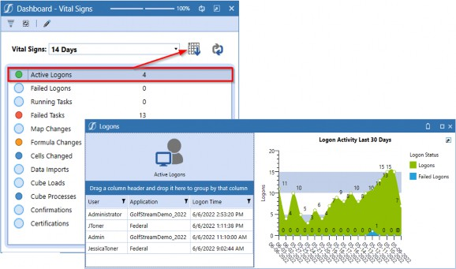
Figure 4.15
OnePlace / Out-of-the-Box Basics › Dashboards
OnePlace
Dashboards are a collection of Components configured to streamline the Workflow process and provide an individualized User experience. The purpose of a Dashboard will determine where and when it should be surfaced, and for what Users.
Dashboard profiles can be made visible in the following locations:
Workflow
OnePlace
Always
Never
| Tip: Always indicates the profile will be made visible in both Workflow and OnePlace, while Never indicates that the profile will not be visible in Workflow or OnePlace. |
Understanding your User is the first step in building meaningful Dashboards. What does the User need to do their job? Who is the User? How often does the User need to complete a task? By asking these questions, you will better understand:
What story does the Dashboard tell, and what information should it convey?
Where should the Dashboard be available?
When should the Dashboard be available?
The Dashboards we typically see in the OnePlace menu are self-service in nature, meaning the User can view reporting in a variety of ways, as well as interact with data unrelated to a Workflow process. Think of these as read-only Dashboards for on-demand reporting.
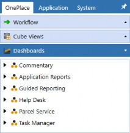
Figure 4.16
OnePlace / Out-of-the-Box Basics › Dashboards
Dashboard Profiles
Dashboard profiles have visibility settings that can be tailored to display information according to the intended User experience. They can be visible in Workflows, in the OnePlace Dashboards pane, both, or never visible, depending on the content and use of a given maintenance unit. It is not uncommon for Dashboard profiles to be set to Visible=Always if the application has robust security to control who sees them and when.
OnePlace / Out-of-the-Box Basics › Dashboards › Dashboard Profiles
Workspace
The purpose of a Workspace is to enhance Reports, functions, and interactivity to display visually tailored solutions for your User. Workspaces can be standalone Dashboards, or they can be layered onto existing Workflows to provide additional analysis and visual metrics.
You may recall that we mentioned – in the Workflow section – how Stage tables can be a powerful data querying source. My go-to Stage table is vStageSourceAndTargetDataWithAttributes because it contains the loaded data and the source data that is often forgotten.
Let us look at an example of a Workspace that has been added to the import Workflow. On the left, you see data that has been transformed and loaded into the Cube; on the right, you see the underlying source data.
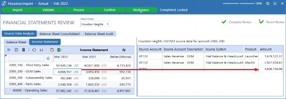
Figure 4.17
How are we able to display the source data when we only loaded target data?
Apply bound parameters to your Cube View to pass the parameters into the query.
Create a data adapter to query the Stage table to the Cube View-specific intersections.
Attach the data adapter to a Grid View Component.
Attach the Grid View Component to a Dashboard.
Create a Cube View Component and attach your Cube View.
Set the Cube View Component User Interface Action property to refresh the Dashboard where you have attached the Grid View.
That’s it! Open the Dashboard and click a Cube View row to display source records dynamically.
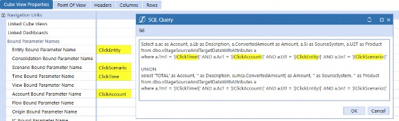
Figure 4.18
OnePlace / Out-of-the-Box Basics
Documents
Do you ever find yourself scouring your inbox for files from colleagues? Or do you have documents on your desktop (or some other random location you cannot remember) that you need to access quickly?
The OnePlace Documents pane is where you can access shared files, as well as files you have stored for your individual use. Public and User folders come out-of-the-box with all applications; just like the folder names suggest, Users can utilize the tool to store files and other reference materials without cluttering the User community’s storage system.
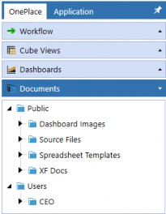
Figure 4.19
By now, you are likely familiar with OneStream’s role-based security model. The same security concepts apply to document management to reduce maintenance and provide flexibility in granting or revoking file access within the File Explorer. Access and Maintenance Group assignments uniquely apply to all files, which means you have complete control over which Users can view files and which Users can modify files; the same concept applies to file folders.
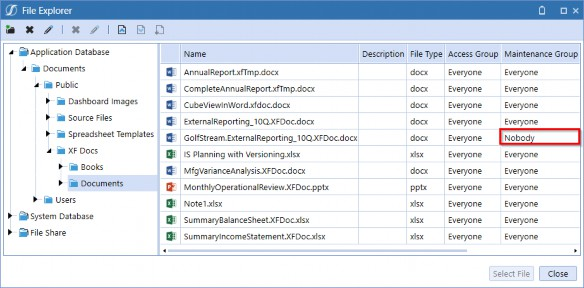
Figure 4.20
OnePlace / Out-of-the-Box Basics
Conclusion
In this chapter, we covered OnePlace – the out-of-the-box landing page where Users perform their assigned tasks and access various Components within the application. We have also explained how role-based security lets you tailor the User Experience by read and write access assignments.
Here is the main takeaway: everything in the OneStream platform is fully configurable and should be designed methodically to give your Users the best experience possible.